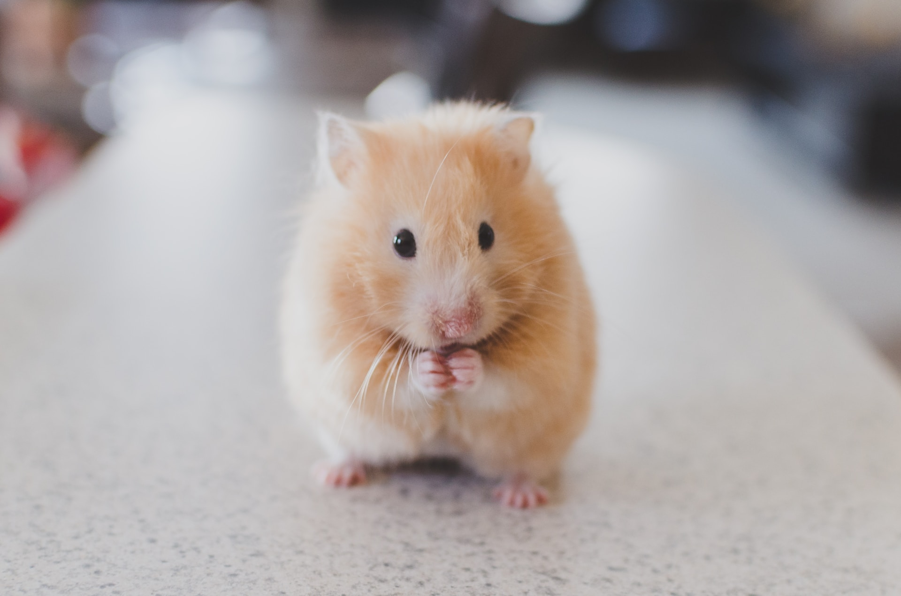

Welcome to Akira Vet
Welcome to Akira Vet, where compassionate care meets furry companionship. At Akira Vet, we prioritize the health and happiness of your pets.
Our dedicated team of experienced veterinarians is committed to providing top-notch veterinary services, ensuring your pets receive the love and attention they deserve.

As a pet-centric clinic, Akira Vet goes beyond the conventional by fostering a warm and inviting environment for both pets and their owners.
At Akira Vet, every tail wag and purr is a testament to our unwavering dedication to the health and happiness of your pets. Join us in creating a world where pets thrive, and their unique personalities shine.

Call Us for Assistance or to Book an Appointment